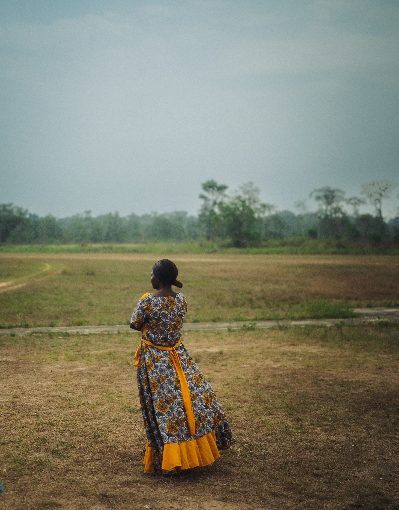
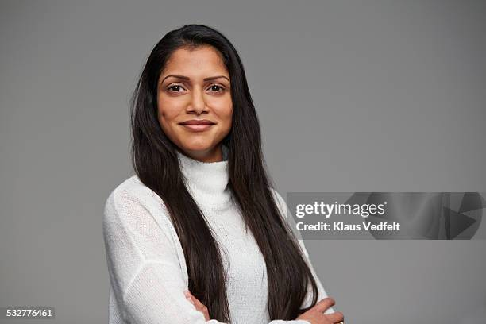
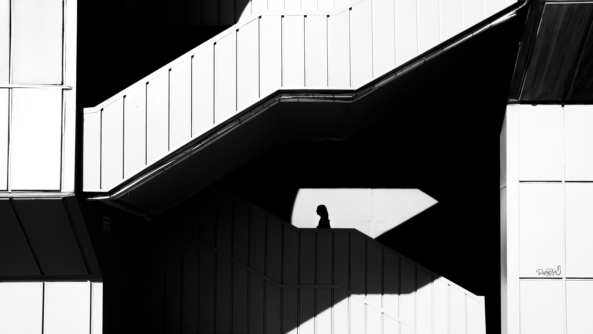

Cooking & Living
Being Here
A minimalist study in culinary balance: vine-ripened heirloom tomatoes, freshly torn sweet basil, buffalo mozzarella, cold-pressed virgin olive oil, and coarse sea salt.

I'm a curious mind. When I'm not designing innovative learning experiences, you'll find me paragliding through breathtaking landscapes, exploring new destinations, or capturing the world through my camera lens. I have a knack for diving into books about diverse cultures, constantly fueling my curiosity and appreciation for the world's diversity. It is with passion and in the pursuit of professional excellence that I share my musings on learning, leading, and living here.
“ The secret to life is to put yourself in the right lighting. For some, it's a Broadway spotlight; for others, a lamplit desk. Use your natural powers of persistence, concentration, and insight to do work you love and work that matters.from Quiet: The Power of Introverts in a World That Can't Stop Talking

A minimalist study in culinary balance: vine-ripened heirloom tomatoes, freshly torn sweet basil, buffalo mozzarella, cold-pressed virgin olive oil, and coarse sea salt.

How adult learners in undergraduate biology classrooms transition from passive memorization to iterative hypothesis testing when empowered by Kaizen feedback loops.
Reflections inspired by Susan Cain: honoring our natural capacities for persistence, solitary concentration, and deep conceptual insight in an overstimulated academy.